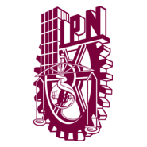

About Sobre mí
Bridging data
and business impact.
Conectando datos
e impacto de negocio.
I'm a Data Science student at ESCOM – IPN with hands-on experience building real data infrastructure at companies that actually use it at scale. I started automating and cleaning data at a sponsorship analytics firm, scaled to competitive intelligence pipelines at BP, and now I'm learning what it means to make data decisions that move a billion-dollar brand. Soy estudiante de Ciencia de Datos en ESCOM – IPN con experiencia real construyendo infraestructura de datos en empresas que la usan a escala. Comencé automatizando y limpiando datos en una firma de analytics de patrocinios, escalé a pipelines de inteligencia competitiva en BP, y ahora aprendo lo que significa tomar decisiones de datos que mueven una marca de mil millones de dólares.
I care about one thing: making data actionable. Not pretty charts for the sake of it — dashboards that finance teams open every Monday morning because they need them. Me importa una sola cosa: hacer los datos accionables. No gráficas bonitas por el gusto — dashboards que los equipos de finanzas abren cada lunes porque los necesitan.

